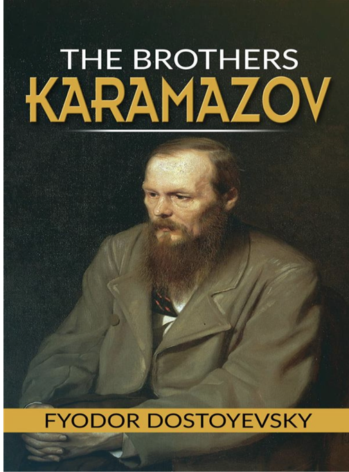
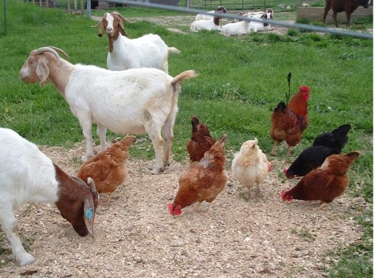
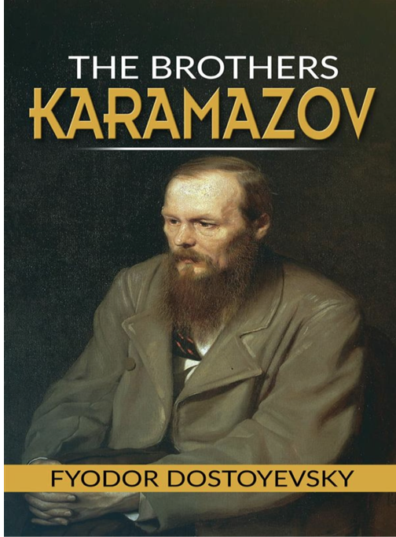
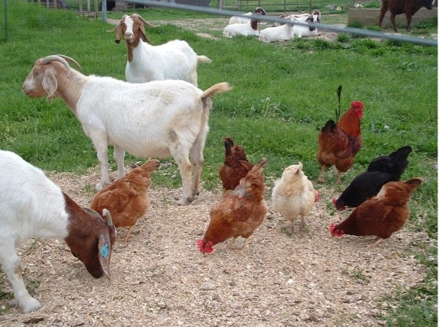

Early Life
Jesse Walsh was born in West Bridgewater, Massachusetts. He grew up in the 80’s enjoying time with his parents. His father was a massive inspiration to him. He graduated with an undergraduate degree in 2001, and a masters degree in 2008. He clearly enjoyed his studies and mastered mathematics.
Hobbies
Jesse Walsh
Hobbies
His hobbies include reading, fixing houses, and bicycling. He is passionate about raising animals and even owned 7 goats and 30 chickens. His favorite types of books are classics, with his current favorite being The Brothers Karamazov by Fyodor Dostoevsky. He also loves to listen to quality music, in all genres. In his free time he studies complicated topics that shed light on our humanity.
Hobbies
Jesse Walsh
Service
Jesse has served all around the world. He spent 2 summers in Calcutta India working with the Missionaries of Charity. Later on he volunteered for 3 months in Romania, helping children enjoy life in outdoor programs. He is inspired by Gandhi and strives to make the world a better place through teaching. He is extrinsically motivated by his family and intrinsically motivated by the pursuit of knowledge.
Hobbies
Jesse Walsh
Goals
Jesse’s lifelong goal is to fight ignorance, including his own. He is excited by maths and people in general. Explaining difficult mathematical concepts is satisfying to him. His current goal as a teacher is to be a successful maths teacher. In the next few years, Jesse aspires to improve his skills in higher level mathematics and computer science. He is guided by his family, beliefs, and pursuits. He has learned many valuable lessons over the years, but most importantly that “the line between good and evil cuts through the heart of every human being.” In his search for knowledge, he remembers that good is what sets us apart and makes us special.
Hobbies
| Basic Math |
Advanced Math |
College Math |
| Geometry |
PreCalculus |
Calculus 2 |
| Algebra |
Calculus |
Statistics |
 



- Massachusetts, USA
- Idaho, USA
- Portugal
- Antigua, Guatemala
- Future: Unknown
| Jesse |
Kaedra |
Jasper (15) |
Zossima (13) |
| Ingretia (10) |
Linus (6) |
Imogen (2) |
Oddessa (2) |